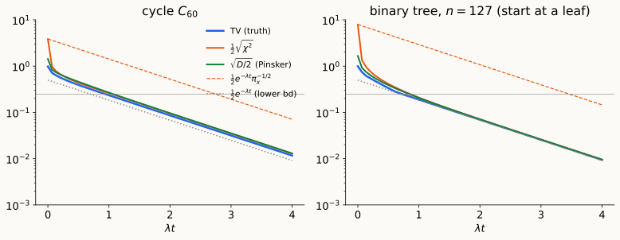

Gap ⇒ mixing time · where log(1/π_min) comes from · entropy production · log-Sobolev preview
\(h = \mu/\pi\) is the density; \(h_t = H_th_0\).
Three distances. \(\mathrm{TV}=\tfrac12\mathbb E_\pi|h-1|\), \(\;\chi^2=\operatorname{Var}_\pi(h)\), \(\;D=\operatorname{Ent}_\pi(h)\), with \[\|\mu-\pi\|_{TV}\le\tfrac12\sqrt{\chi^2},\qquad\|\mu-\pi\|_{TV}\le\sqrt{D/2},\qquad D\le\log(1+\chi^2).\] Mixing time: \(d(t)=\max_x\|\delta_xH_t-\pi\|_{TV}\), \(\;t_{\rm mix}(\varepsilon)=\min\{t:d(t)\le\varepsilon\}\).
\(\chi^2\) decay. \(\frac{d}{dt}\operatorname{Var}_\pi(h_t)=-2\mathcal E(h_t,h_t)\) and Poincaré give \(\operatorname{Var}_\pi(H_th)\le e^{-2\lambda t}\operatorname{Var}_\pi(h)\). The gap is the optimal \(\chi^2\) rate.
From a point mass: TV \(\le1\), \(D\approx\log n\), \(\chi^2\approx n\). Remember \(1\) vs. \(\log n\) vs. \(n\): it is the story of today.
Theorem. For the continuous-time walk, \(\pi_{\min} = \min_x\pi_x\): \[ \frac1\lambda\log\frac1{2\varepsilon}\ \le\ t_{\rm mix}(\varepsilon)\ \le\ \frac1\lambda\Big(\tfrac12\log\frac1{\pi_{\min}} + \log\frac1{2\varepsilon}\Big). \]
Upper. Lemma (1) + Lecture 3 (\(\chi^2\) decay): \(\;\|\delta_xH_t-\pi\|_{TV}\le\tfrac12\sqrt{\chi^2(\delta_xH_t\Vert\pi)}\le\tfrac12e^{-\lambda t}\pi_x^{-1/2}\).
Lower. Scale \(f = \varphi_2\) so \(\|f\|_\infty = 1 = |f(x)|\). Then \(\mathbb E_\pi f = 0\), \((H_tf)(x) = e^{-\lambda t}f(x)\), and \[ e^{-\lambda t} = |\mathbb E_{\delta_xH_t}f - \mathbb E_\pi f|\le\|\delta_xH_t-\pi\|_1\|f\|_\infty = 2\|\delta_xH_t-\pi\|_{TV}. \qquad\square \]

\(\chi^2\) starts at \(\approx n\) and must spend time \(\approx\frac{\log n}{2\lambda}\) just getting below \(1\). TV starts at \(\le1\).
Same computation as Proof 2, with \(\operatorname{Ent}_\pi\) in place of \(\operatorname{Var}_\pi\):
\[ \frac d{dt}\operatorname{Ent}_\pi(h_t) = \mathbb E_\pi\big[(1+\log h_t)\,\partial_th_t\big] = -\langle\log h_t, L_{rw}h_t\rangle_\pi \]
\[ = -\mathcal E(h_t,\log h_t)\ \le\ 0 . \]
\(\mathcal E(h,\log h)\): entropy production (discrete Fisher information).
From the gap alone (Lecture 3, Lemma 3): \(\;D(\mu_t\Vert\pi)\le\log\big(1 + e^{-2\lambda t}\chi^2(\mu_0\Vert\pi)\big)\) — rate \(2\lambda\) eventually, but the same \(\log n\) burn-in.
To close the loop we need a new functional inequality, the modified log-Sobolev inequality:
\[ \rho_0\operatorname{Ent}_\pi(h)\le\mathcal E(h,\log h)\quad\Longrightarrow\quad D(\mu_t\Vert\pi)\le e^{-\rho_0t}D(\mu_0\Vert\pi). \]
With Pinsker:
\[ t_{\rm mix}(\varepsilon)\le\frac1{\rho_0}\Big(\log\log\frac1{\pi_{\min}} + \log\frac1{2\varepsilon^2}\Big) \qquad\text{vs.}\qquad \frac1\lambda\Big(\tfrac12\log\frac1{\pi_{\min}} + \log\frac1{2\varepsilon}\Big). \]
The price is the constant: entropy can’t decay faster than twice the gap,
\[ \rho_0\ \le\ 2\lambda . \]
Proof. Linearize at equilibrium, \(h = 1+\epsilon g\), \(\mathbb E_\pi g = 0\): \[ \operatorname{Ent}_\pi(h) = \tfrac{\epsilon^2}2\operatorname{Var}_\pi g + O(\epsilon^3),\qquad \mathcal E(h,\log h) = \epsilon^2\mathcal E(g,g) + O(\epsilon^3). \] MLSI forces \(\rho_0\le 2\,\mathcal E(g,g)/\operatorname{Var}_\pi g\) for every \(g\); take \(g = \varphi_2\). \(\square\)
Entropy wins when \(\rho_0\) is comparable to the gap. When is it? How do we bound it? → later lecture.
Graph. \(G = (V,E,w)\) undirected, connected; \(d_i = \sum_jw_{ij}\); \(\mathrm{vol}(S) = \sum_{i\in S}d_i\); \(\pi_i = d_i/\mathrm{vol}(V)\), \(\Pi = \operatorname{diag}(\pi)\).
Gradient / divergence. \((\nabla f)(i\to j) = f_j - f_i\); \(\operatorname{div}_m = -\nabla_m^*\) w.r.t. \(\langle\cdot,\cdot\rangle_w\) on edges and \(\langle\cdot,\cdot\rangle_m\) on vertices. \(\nabla^*\nabla = L = D-A\); \(\nabla_d^*\nabla = L_{rw} = D^{-1}L = I-P\); \(\mathcal L = D^{-1/2}LD^{-1/2}\).
Dirichlet form. \(\mathcal E(f,g) = \langle f,L_{rw}g\rangle_\pi = \frac1{\mathrm{vol}(V)}\sum_{\{i,j\}\in E}w_{ij}(f_i-f_j)(g_i-g_j)\).
Walk. \(P = D^{-1}A\); measures \(\mu^\top P\), functions \(Pf\). Random-walk Laplacian \(L_{rw} = I - P\). Continuous time \(H_t = e^{-tL_{rw}}\), generator \(\mathcal A = P - I = -L_{rw}\). Lazy: \(P_{\rm lazy} = \frac12(I+P)\).
Reversibility. \(\Pi P = P^\top\Pi\); densities \(h = \mu/\pi\) evolve as \(h_t = H_th_0\).
Gap / Poincaré. \(\lambda = \lambda_2(L_{rw}) = \min_f\mathcal E(f,f)/\operatorname{Var}_\pi(f)\); \(t_{\rm rel} = 1/\lambda\).
Distances. \(\|\mu-\pi\|_{TV} = \frac12\mathbb E_\pi|h-1|\); \(\chi^2(\mu\Vert\pi) = \operatorname{Var}_\pi(h)\); \(D(\mu\Vert\pi) = \operatorname{Ent}_\pi(h)\). \(\;2\,\mathrm{TV}\le\sqrt{\chi^2}\); \(\mathrm{TV}\le\sqrt{D/2}\); \(D\le\log(1+\chi^2)\).
Mixing time. \(d(t) = \max_x\|\delta_xH_t-\pi\|_{TV}\); \(t_{\rm mix}(\varepsilon) = \min\{t: d(t)\le\varepsilon\}\).
χ² decay. \(\operatorname{Var}_\pi(H_th)\le e^{-2\lambda t}\operatorname{Var}_\pi(h)\); \(\frac d{dt}\operatorname{Var}_\pi(h_t) = -2\mathcal E(h_t,h_t)\).
Mixing from the gap. \(\frac1\lambda\log\frac1{2\varepsilon}\le t_{\rm mix}(\varepsilon)\le\frac1\lambda\big(\frac12\log\frac1{\pi_{\min}}+\log\frac1{2\varepsilon}\big)\).
Entropy. \(\frac d{dt}\operatorname{Ent}_\pi(h_t) = -\mathcal E(h_t,\log h_t)\). MLSI \(\rho_0\operatorname{Ent}_\pi(h)\le\mathcal E(h,\log h)\) \(\Rightarrow\) \(D(\mu_t\Vert\pi)\le e^{-\rho_0t}D(\mu_0\Vert\pi)\); \(\;\rho_0\le2\lambda\).